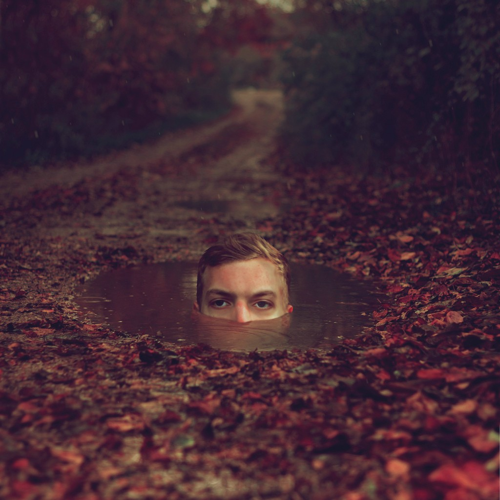
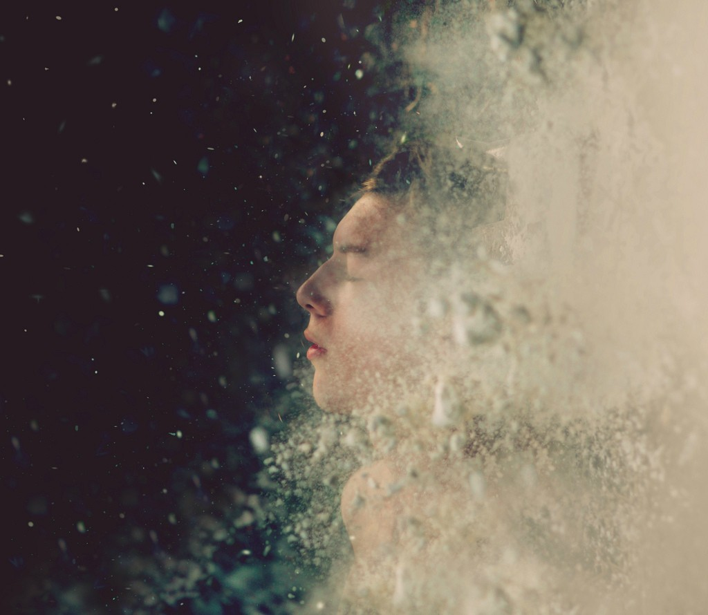
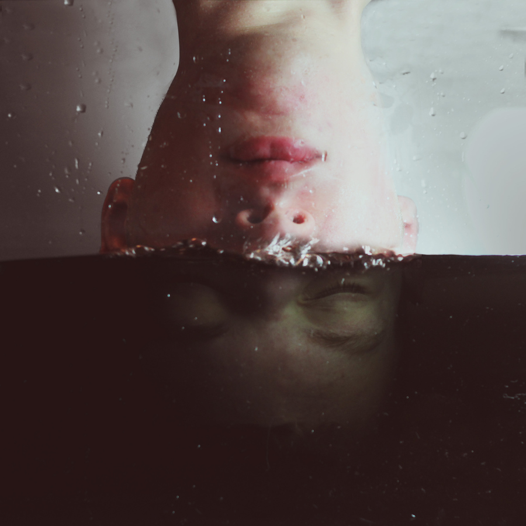
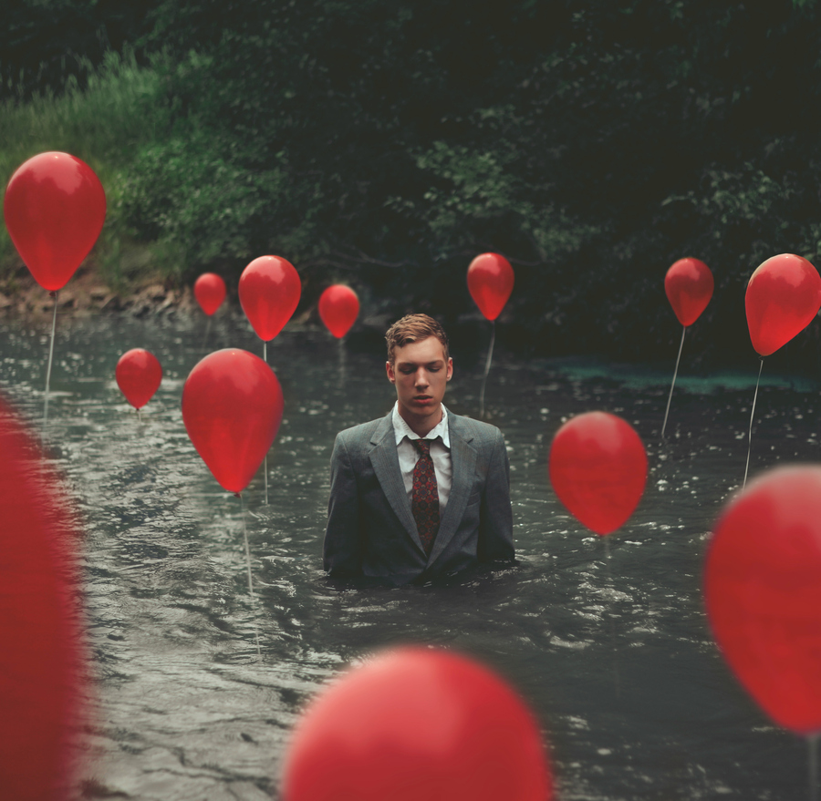
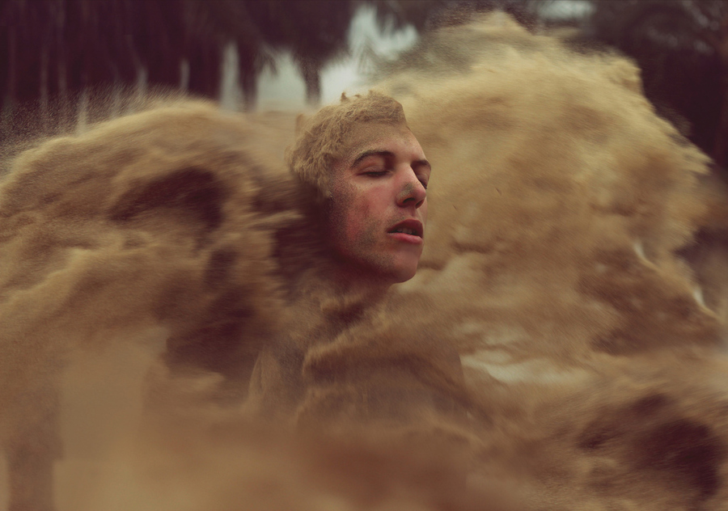

Kyle Thompson
As a self taught photographer, Kyle Thompson began posting his surreal self portraits on Tumblr and Reddit several months ago. The unexpected exposure from his work has helped fuel his fine arts photography career.
Follow Kyle Thompson on Tumblr for more of his shots, details on his process, and answered questions.